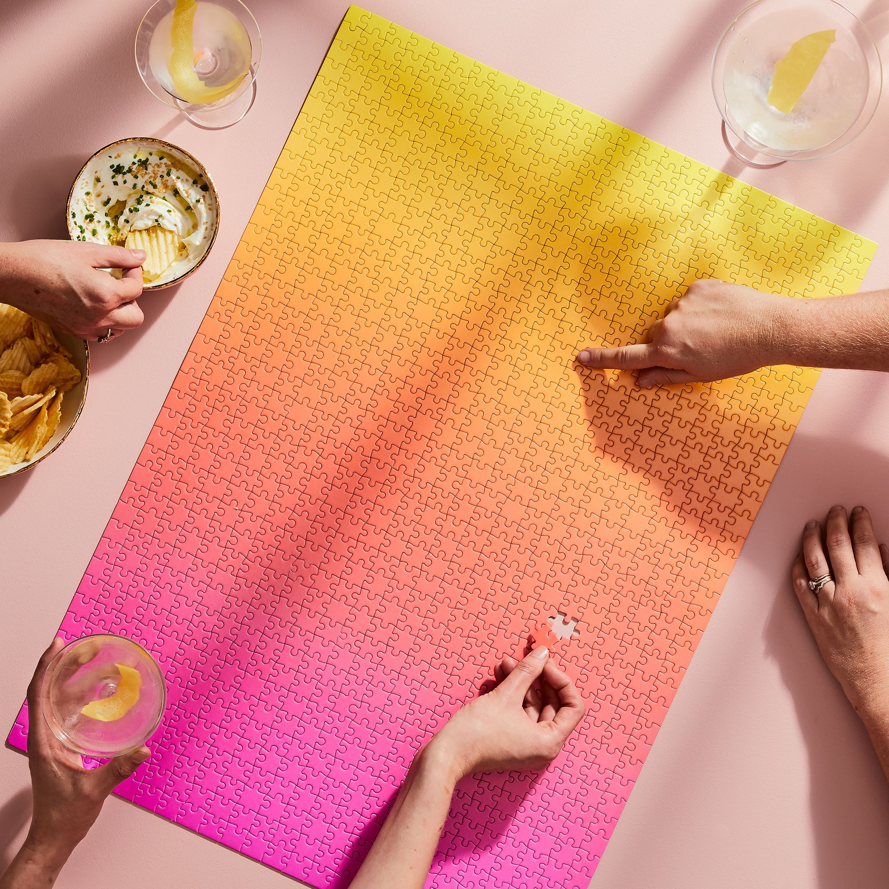

O puzzle hrách

Puzzle, skladací obrázok (anglická skladačka) alebo mozaika (ruská verzia) je logická hra, v ktorej je potrebné vyrobiť mozaiku z mnohých kúskov kresby rôznych tvarov.Podľa psychológov zbieranie hádaniek prispieva k rozvoju obrazného a logického myslenia, dobrovoľnej pozornosti, vnímania, najmä rozlišovania jednotlivých prvkov farbou, tvarom, veľkosťou atď.; učí vás správne vnímať spojenie medzi časťou a celkom; rozvíja jemnú motoriku. V angličtine jediné slovo „puzzle“ znamená puzzle každého druhu, nie nevyhnutne puzzle.
Podľa jednej verzie bol prvý, kto prišiel s hádankami okolo roku 1760, londýnsky rytec, kartograf a vydavateľ John Spilsbury. Vyrobil fascinujúce puzzle - uvidel čierno-bielu papierovú geografickú mapu, predtým nalepenú na drevenom podklade, pozdĺž línií štátnych hraníc. Bola navrhnutá nová mapa.
Až do začiatku 19. storočia sa skladačky používali ako učebná pomôcka. Obrázky, ktoré do seba zapadali, neboli pripevnené, ale jednoducho umiestnené na podstavci. Na konci 19. storočia bol drahý drevený podstavec nahradený lacnejším kartónom. V roku 1909 bola v USA otvorená prvá továrenská výroba skladačiek s upevňovacími časťami. V dôsledku hromadnej výroby hlavolamov puzzle zlacneli, čo zvýšilo popularitu hry. Princíp výroby sa dodnes prakticky nezmenil. Motív vytlačený na kartóne je pomocou dierovača nakrájaný na veľa malých kúskov.
V súčasnej dobe existuje veľké množstvo rôznych druhov a modifikácií hlavolamov. Účelom ich zhromažďovania je jeden - získať jediný obrázok z jednotlivých prvkov. Hádanky sú rozdelené podľa veľkosti prvkov a veľkosti jedného obrázka. Zložitosť hádanky v rámci jedného počtu prvkov určuje obrázok a hlavným kritériom je počet samotných prvkov - čím je vyšší, tým je hádanka väčšia a zložitejšia.
Klasický počet prvkov v malej skladačke je 54 (puzzle až do 260 prvkov sa považujú za detské). Veľkosti hádaniek sa pohybujú od malých (asi 50 cm²) po veľmi veľké (niekoľko m²). Napríklad štandardná veľkosť 500-dielnej skladačky je 47 × 33 cm.
Existujú malé kúsky skladačiek špeciálne určených pre malé deti. Na detských hádankách sú najčastejšie zobrazené kreslené postavičky alebo rámy z karikatúr.
Puzzle s viac ako 260 dielikmi sú zamerané skôr na dospelé publikum. Preto môžu zobrazovať krajiny, erotické a fantastické scény. K dispozícii sú puzzle s reklamnými obrázkami. [3] Veľmi veľké hádanky (viac ako 6 tisíc prvkov) zvyčajne zobrazujú scény z Biblie, obrazy slávnych umelcov, staré geografické mapy. Ich zostavenie trvá pomerne dlho.
Okrem klasických existujú aj trojrozmerné (3D puzzle), „mäkké“ (určené pre deti) a počítačové puzzle.
Výčnelky prvkov puzzle môžu byť rôznych typov. Najčastejšie sú obdĺžnikové (s výčnelkami a drážkami), existujú však prvky trojuholníkového, okrúhleho, oválneho a iného tvaru.
V 3D skladačkách musí byť mozaika zložená z mnohých kúskov kresby v trojrozmernom priestore. Zvyčajne 3D hádanky predstavujú rôzne architektonické budovy a pamiatky, ako aj niektoré typy vybavenia (autá, lode). Počet prvkov v takýchto hádankách dosahuje 3046.
▚ Starodávna ruská mozaika - hra „Úroda“ (30. roky 18. storočia), umelec a litograf Petr Pirv Vdovičev, sa zaoberala výrobou litografických obrazov a kartónových hier vrátane rezaných obrazov, vlastníkom dielne, ktorá existovala v Petrohrade v 30. - 40. rokoch.
▙ V roku 2010 spoločnosť Ravensburger Puzzle vydala puzzle s 32 256 dielmi (najväčší počet dielikov v tej dobe). Predstavovala koláž 32 komiksov od Keitha Haringa. Veľkosť tejto skladačky je 544 × 192 cm, hmotnosť - 26 kg.
▞ V roku 2020 vydala spoločnosť Kodak, americká spoločnosť pre fotografické materiály, najväčšiu hádanku v histórii, 27 divov z celého sveta. Skladačka sa skladá z 51 tisíc 300 prvkov a je venovaná slávnym architektonickým pamiatkam. 51 300 dielna mozaika meria približne 8,69 metra krát 1,9 metra.
▛ V roku 2012 bola na počesť osláv Roka Nemecka v Rusku vytvorená najväčšia skladačka na svete (20 × 15 m). Toto je reprodukcia nemeckého maliara Albrechta Durera „Autoportrét v kožuchu“. Mozaika bola zhromaždená v Moskve, Jekaterinburgu, Novosibirsku, Petrohrade a ďalších mestách Ruska. Priemerná rýchlosť zberu maľby bola 3 hodiny. Skladačka pozostávala z 1023 prvkov, hmotnosť každého prvku bola asi 800 g, ich veľkosť bola 70 × 70 cm. [Zdroj neuvedený 3025 dní]